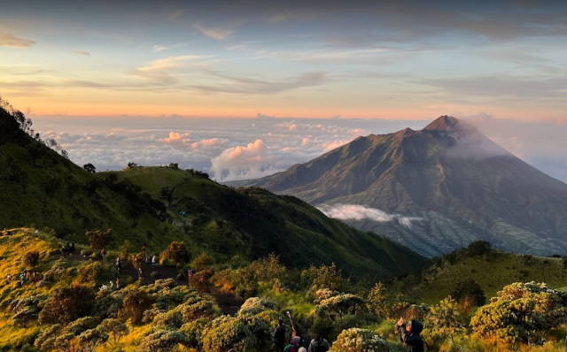

JELAJAH WISATA INDONESIA
Temukan Keindahan Alam dan Budaya Indonesia
🏡 Beranda
Selamat datang di website Jelajah Wisata Indonesia. Website ini berisi informasi berbagai tempat wisata menarik yang ada di Indonesia.
Indonesia memiliki banyak sekali destinasi wisata mulai dari pegunungan, pantai, laut, hingga wisata budaya.
🏔️ Destinasi Wisata
Berikut adalah objek wisata menarik di Jawa Timur

Gunung Merbabu
Gunung Merbabu adalah gunung api aktif bertipe strato dengan ketinggian 3.145 meter di atas permukaan laut yang terletak di Provinsi Jawa Tengah, mencakup wilayah Kabupaten Magelang, Boyolali, dan Semarang.

Kawah Ijen
Kawah Gunung Ijen adalah danau kawah vulkanik aktif yang terkenal dengan fenomena api biru (blue fire) dan air danau berwarna hijau Toska yang sangat asam.
.jpg)
Air Terjun Tumpak Sewu
salah satu air terjun paling megah dan spektakuler di Indonesia yang dijuluki sebagai "Niagara-nya Indonesia". Terletak di perbatasan antara Kabupaten Lumajang dan Kabupaten Malang, Jawa Timur
🎵 Musik Nusantara
Silakan dengarkan musik berikut sambil menikmati informasi wisata Indonesia.
🌄 Wonderland Indonesia
Silakan melihat video berikut sambil menikmati informasi wisata Indonesia.
Rahma Aulia (28) X RPL 2